Zimní dovolená ve Švýcarsku je pro mnoho lidí splněným snem díky kombinaci špičkových služeb, luxusních středisek a dechberoucí alpské krajiny. Zermatt, Davos nebo St. Moritz patří mezi světově proslulé destinace, kde se setkávají profesionálové i rekreační lyžaři. Švýcarské sjezdovky jsou perfektně upravené a často doplněné moderními lanovkami a kvalitním zázemím. Turisté zde oceňují nejen skvělé podmínky pro lyžování, ale i zimní turistiku a běžkařské tratě v čisté horské přírodě. Po náročném dni na svahu si návštěvníci rádi dopřejí tradiční fondue nebo raclette, které ke švýcarské zimě neodmyslitelně patří. Díky spolehlivému vlakovému spojení se lze snadno dostat i do vysokohorských oblastí, což činí cestování velmi pohodlným. Švýcarsko tak nabízí jedinečný zážitek v podobě kombinace sportu, odpočinku a luxusu.
Zermatt je ikonickou destinací díky majestátnímu Matterhornu, který dominuje celému údolí. Městečko je bez automobilů, což vytváří klidnou a romantickou atmosféru. Lyžaři si užívají rozsáhlé tratě propojené až s italským Cervinií. Moderní lanovky zajišťují skvělý komfort a rychlý přesun na svahy. Večer láká centrum města luxusními restauracemi i tradičními švýcarskými podniky.
od 84 990 Kč

St. Moritz je jedním z nejluxusnějších zimních středisek na světě. Nabízí nejen sjezdové lyžování, ale i bohatý kulturní program a exkluzivní služby. Místní jezero v zimě zamrzá a pořádají se na něm unikátní sportovní akce. Okolní hory poskytují slunečné počasí a krásné výhledy. St. Moritz je oblíbeným místem celebrit a náročných cestovatelů.
od 99 990 Kč
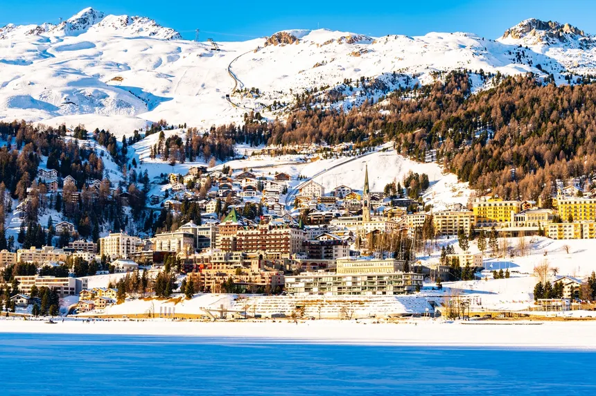
Davos je známý nejen jako lyžařské středisko, ale také jako dějiště Světového ekonomického fóra. Lyžaře přitahuje špičkovými sjezdovkami a velkou rozlohou oblasti. Výborné podmínky zde najdou i běžkaři díky dlouhým upraveným tratím. Místní klima je velmi příznivé pro zimní sporty. Davos nabízí perfektní spojení sportu, kultury a moderního zázemí.
od 74 990 Kč
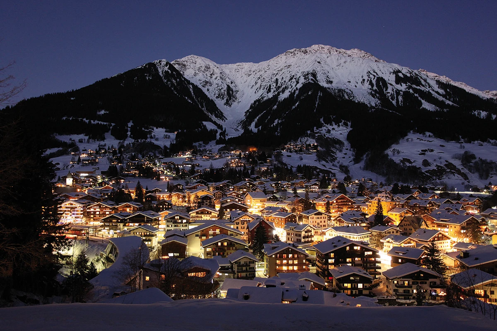
Francouzská zimní dovolená je známá obrovskými propojenými lyžařskými areály, jako jsou Les Trois Vallées nebo Tignes – Val d’Isère, které patří k největším v Evropě. Lyžaři zde najdou dlouhé a pestré tratě, které uspokojí začátečníky i velmi zkušené sportovce. Vysoká nadmořská výška mnoha středisek zajišťuje výborné sněhové podmínky po celou sezónu. Charakteristickou součástí francouzských hor je také živé après-ski, kde si lidé po lyžování užívají zábavu, hudbu a gastronomické speciality. Jídlo je zde samostatným zážitkem — savojské sýry, tartiflette či raclette patří k nejoblíbenějším pokrmům. Mnoho ubytování stojí přímo u sjezdovek, takže hosté mohou lyžovat téměř od dveří. Francie je tak ideálním místem pro ty, kteří hledají kombinaci pohodlí, sportu a dobrého jídla.
Chamonix leží pod Mont Blancem, nejvyšší horou Evropy. Je to kolébka alpinismu a ráj pro zkušené lyžaře i horolezce. Město má bohatou historii a živou atmosféru. Sjezdovky jsou náročnější, ale nabízejí fantastické panoramatické výhledy. Chamonix je ideální pro dobrodruhy, kteří hledají intenzivní zimní zážitek.
od 42 990 Kč
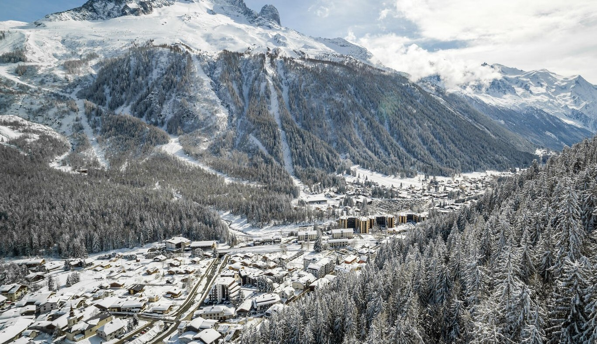
Les Trois Vallées je největší lyžařská oblast na světě. Propojuje střediska Courchevel, Méribel a Val Thorens. Nabízí přes 600 km sjezdovek všech obtížností. Díky moderním lanovkám je přesun mezi údolími rychlý a pohodlný. Zážitek doplňuje skvělé jídlo i bohatý après-ski program.
od 55 990 Kč
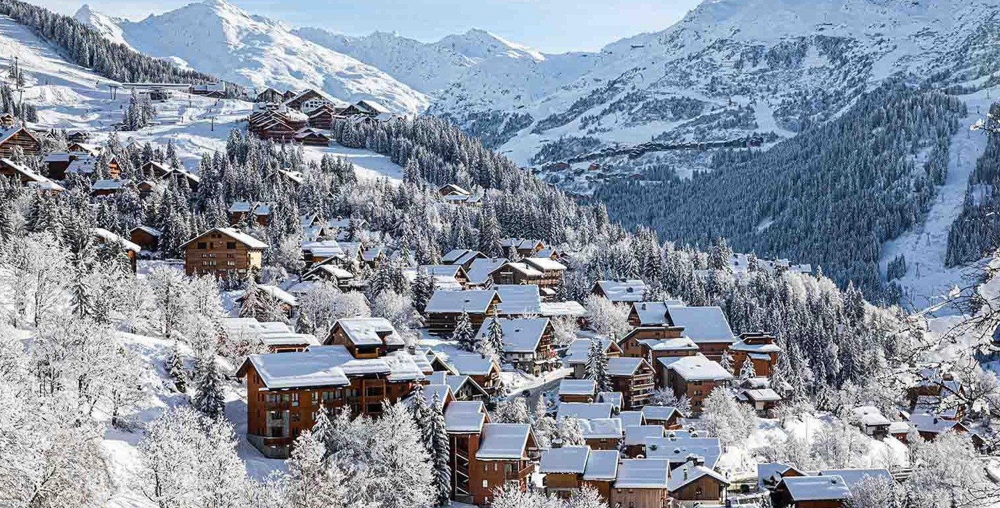
Oblast Tignes–Val d’Isère je známá jistotou sněhu díky vysoké nadmořské výšce. Lyžuje se zde až do jara, často i na ledovci. Střediska nabízejí pestrou paletu tratí a velmi kvalitní zázemí. Zkušení lyžaři si oblíbí dlouhé a prudší sjezdy. Moderní horská atmosféra přitahuje návštěvníky z celého světa.
od 59 990 Kč
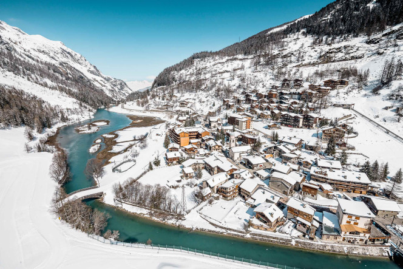
Itálie láká turisty především Dolomity, které jsou díky svým jedinečně tvarovaným skalním štítům jednou z nejkrásnějších horských oblastí světa. Zimní dovolená zde je proslulá nejen skvělým lyžováním, ale i příjemnou atmosférou a výbornou gastronomií. Lyžařské středisko Dolomiti Superski nabízí stovky kilometrů sjezdovek a moderní lanovky, které zaručují komfortní zážitky. Návštěvníci oceňují teplejší slunečné dny, které jsou v Itálii častější než v jiných alpských zemích. Po sportovním dni si turisté často dopřejí pizzu, těstoviny nebo pravé italské cappuccino. Kromě sjezdového lyžování jsou zde také výborné podmínky pro běžkování a zimní turistiku. Itálie tak představuje ideální destinaci pro rodiny i páry, kteří chtějí spojit sport s relaxací a dobrým jídlem.
Cortina je elegantní horské středisko v srdci Dolomit. Okouzluje stylovou atmosférou a tradiční architekturou. Sjezdovky s výhledy na skalní masivy patří k těm nejkrásnějším v Evropě. Město často hostí světové lyžařské závody. Kromě lyžování si zdejší návštěvníci užívají skvělé restaurace a butiky.
od 47 990 Kč
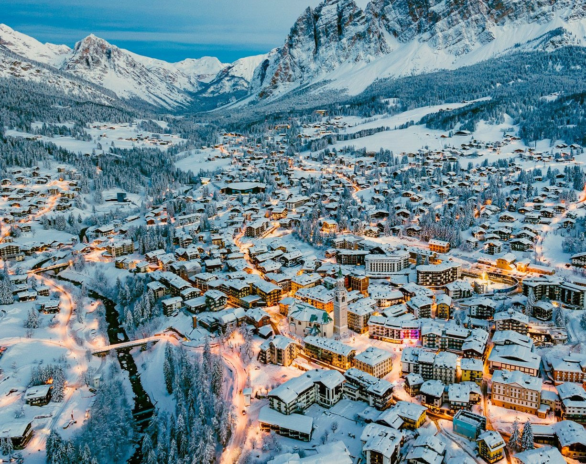
Val Gardena je jednou z hlavních bran do oblasti Dolomiti Superski. Nabízí stovky kilometrů propojených tratí a moderní lanovky. Známá je panoramatická trasa Sella Ronda, kterou může projet každý lyžař. Atmosféra je klidná, přátelská a ideální pro rodiny. Kombinace přírody, jídla a sportu vytváří nezapomenutelný zážitek.
od 41 990 Kč
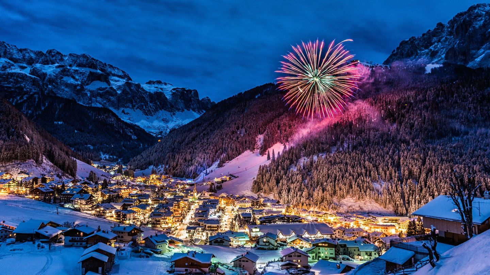
Livigno je vysokohorské údolí se skvělými sněhovými podmínkami. Oblíbené je pro široké, přehledné sjezdovky vhodné pro začátečníky i pokročilé. Město má zónu bez daně, takže je ideální pro nákupy. Kromě lyžování nabízí udržované běžkařské tratě a zimní stezky. Atmosféra je živá a velmi přátelská.
od 40 990 Kč
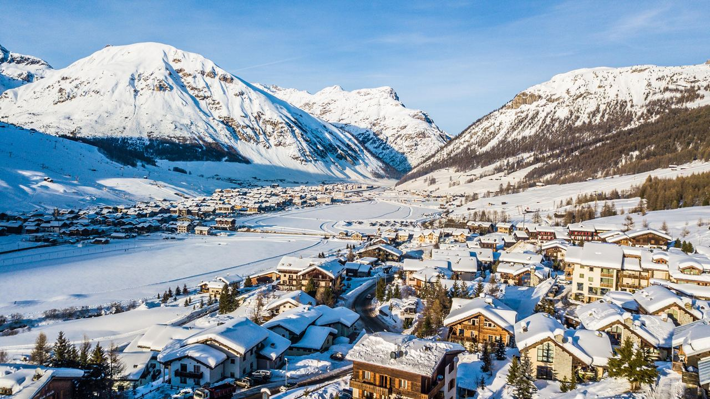
Rakousko je jednou z nejoblíbenějších zimních destinací díky své blízkosti, přátelské atmosféře a špičkově vybaveným střediskům. Oblasti jako Tyrolsko, Salcbursko nebo Korutany nabízejí moderní lanovky, kvalitní sjezdovky a široké možnosti ubytování. Po celém Rakousku je rozšířená tradice útulných horských chat, kde se podávají místní speciality, například germknödel nebo štrúdl. Rakouské Alpy poskytují nejen výborné podmínky pro lyžování, ale i pro běžky, sáňkování a zimní turistiku. Rodiny s dětmi oceňují skvěle vybavené lyžařské školy a dětské parky. Après-ski je v Rakousku velmi živé a patří k nejlepším v Evropě. Díky cenově dostupnějšímu ubytování a přívětivému prostředí se sem lidé rádi vracejí rok co rok.
Sölden je známý dvěma ledovci, které umožňují lyžování od podzimu do jara. Každoročně hostí zahajovací závody Světového poháru. Středisko nabízí mnoho moderních lanovek a náročnějších tratí. Après-ski scéna je zde velmi živá. Široké sjezdovky a vysoká nadmořská výška zaručují výborné podmínky.
od 35 990 Kč
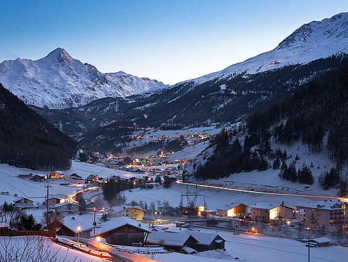
Kitzbühel je jedním z nejprestižnějších rakouských středisek. Proslavil ho závod Hahnenkamm, jeden z nejtěžších na světě. Město má krásné historické centrum a luxusní hotely. Lyžařská oblast je rozsáhlá a vhodná pro všechny úrovně. Kitzbühel kombinuje sportovní atmosféru s elegancí.
od 40 990 Kč

Schladming je populární díky závodům na sjezdovce Planai. Nabízí výborné podmínky pro rodiny i sportovní lyžaře. Čtyři propojené vrcholy poskytují mnoho sjezdovek různých obtížností. Après-ski je zde přátelské a tradiční. Celé údolí působí útulně a nabízí skvělé ubytování.
od 30 990 Kč
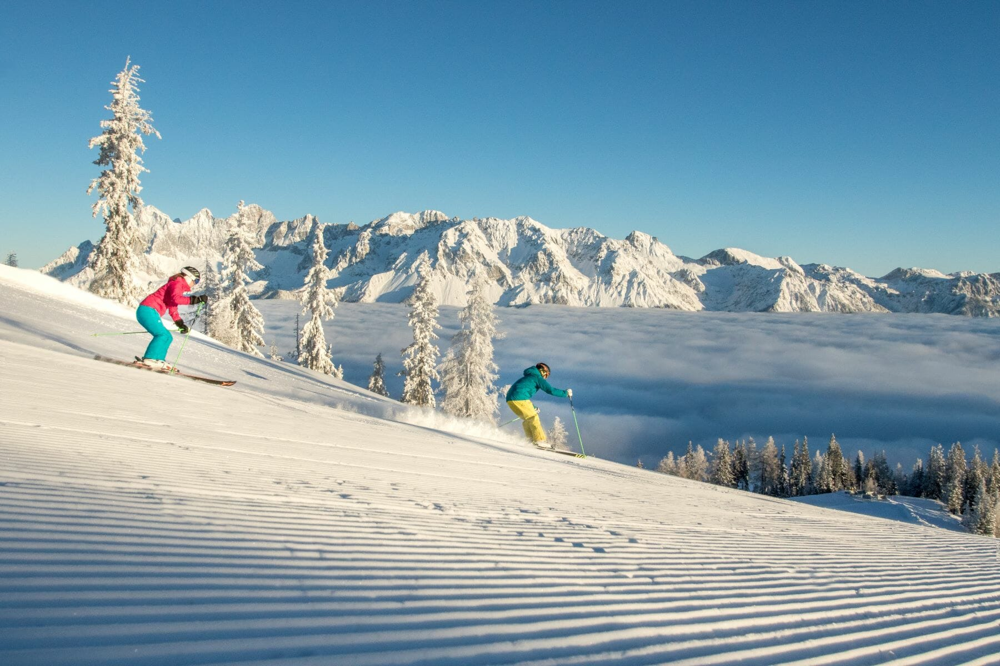
Slovensko nabízí krásné zimní zážitky v Tatrách, které jsou snadno dostupné a vhodné pro celou rodinu. Nejznámější střediska jako Jasná nebo Tatranská Lomnica poskytují kvalitní sjezdovky a moderní lanovky. Vysoké Tatry okouzlují svou drsnou, ale nádhernou krajinou, která je ideální pro zimní turistiku. Po sportovních aktivitách si návštěvníci rádi užijí termální koupaliště a wellness centra. Slovensko je oblíbené díky příznivým cenám, které umožňují dostupnou dovolenou i méně náročným cestovatelům. Kromě lyžování je zde také mnoho běžkařských tras a možností pro sáňkování. Tradiční slovenská kuchyně, jako halušky nebo kapustnica, krásně zahřeje po návratu z hor. Slovensko je tak ideální volbou pro ty, kteří chtějí příjemné prostředí za rozumnou cenu.
Jasná je největší a nejmodernější slovenské středisko. Lyžuje se na obou stranách Chopku. Nabízí široké sjezdovky, freeride zóny i kvalitní lanovky. Výhodou je dobrá dostupnost a služby na vysoké úrovni. V okolí je mnoho wellness hotelů a atrakcí.
od 10 990 Kč
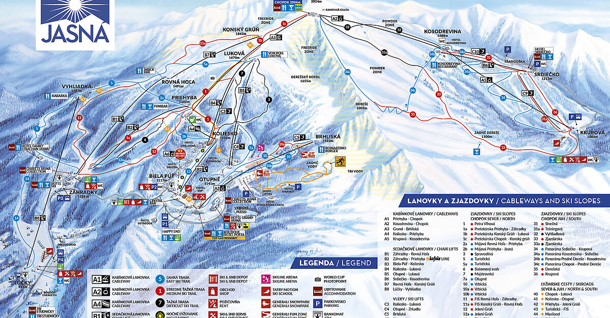
Tatranská Lomnica leží ve Vysokých Tatrách a nabízí nejprudší slovenské sjezdy. Lanovka vede až k Lomnickému sedlu, odkud jsou nádherné výhledy. Sjezdovky jsou dlouhé a přehledné, vhodné pro sportovní lyžování. Městečko má příjemnou atmosféru. V okolí najdeš hotely, restaurace i turistické trasy.
od 11 990 Kč
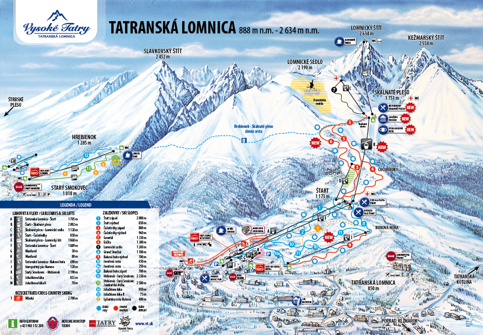
Donovaly jsou ideální pro rodiny s dětmi. Nabízejí velký dětský park a mírné sjezdovky. Oblast je velmi přehledná a bezpečná. Kromě lyžování jsou zde běžkařské tratě a zimní aktivity. Atmosféra je klidná a vhodná pro pohodovou dovolenou.
od 9 990 Kč
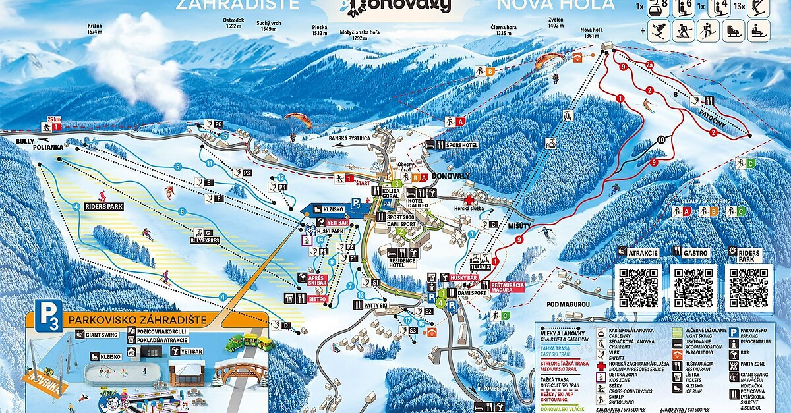
Česká republika nabízí pestrou zimní dovolenou především v Krkonoších, Jeseníkách a na Šumavě. Střediska jako Špindlerův Mlýn nebo Pec pod Sněžkou poskytují kvalitní podmínky pro lyžování a snowboard. I když české hory nejsou tak vysoké jako Alpy, atmosféra je přátelská a ideální pro rodiny s dětmi. Velkou výhodou je dobrá dostupnost, takže si lyžování mohou lidé užít i na krátkých víkendových pobytech. Běžkaři ocení rozsáhlé tratě, například v Jizerských horách, které patří k nejlepším u nás. Po dni na sněhu si turisté často užívají českou kuchyni v horských chatách, kde nechybí tradiční polévky či knedlíková jídla. Česká republika je také známá pestrou nabídkou zimních aktivit, od sáňkování po zimní turistiku. Díky rozumným cenám je dostupná pro širokou veřejnost.
Špindlerův Mlýn je nejznámější české lyžařské středisko. Nabízí moderní lanovky a pestré sjezdovky. Část Svatý Petr je oblíbená mezi sportovci. Město má mnoho hotelů, restaurací a aktivit. Atmosféra je živá a vhodná pro mladé i rodiny.
od 5 990 Kč
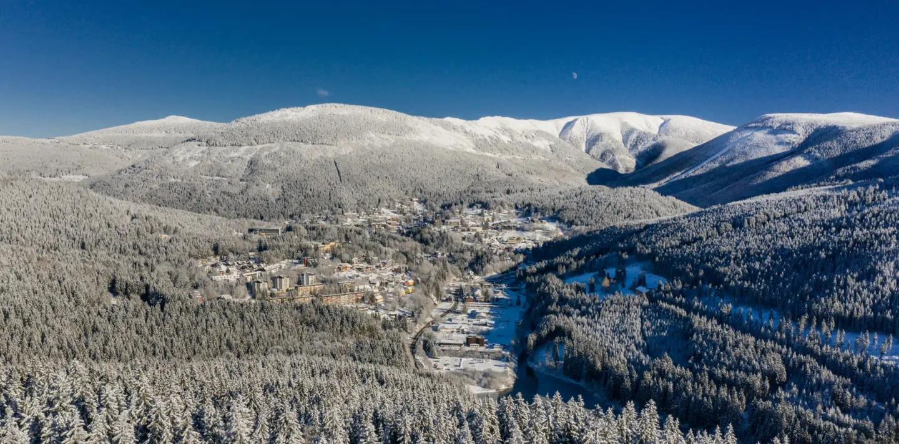
Pec leží pod nejvyšší českou horou Sněžkou. Středisko nabízí propojené tratě v rámci SkiResortu Černá hora – Pec. Sjezdovky jsou různé obtížnosti a vhodné pro všechny typy lyžařů. V okolí jsou krásné zimní trasy. Pec je skvělou volbou pro delší zimní pobyt.
od 5 990 Kč
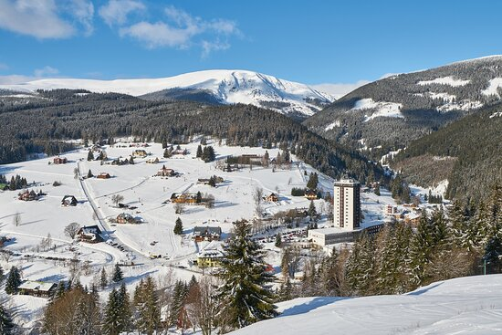
Jizerské hory jsou rájem pro běžkaře. Bedřichov je výchozí místo Jizerské magistrály. Každoročně se zde koná slavný závod Jizerská 50. Kromě běžek nabízí okolí i zimní turistiku. Klidná atmosféra je ideální pro odpočinek.
od 4 990 Kč
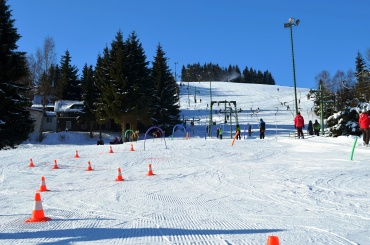